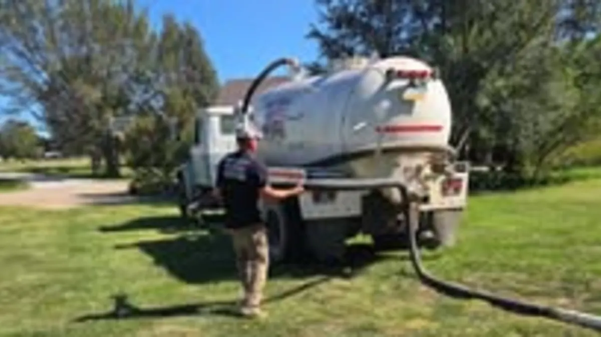

Septic Service Overview
New system installation, how the whole process works, and what a septic system is doing underground.
Routine tank pump-outs and clean-outs for rural and residential properties across Central Kansas. We run our own pump truck, so the schedule is ours to set, not a subcontractor's.
A backed-up tank does not wait for business hours. Call Mike directly at 785-488-7925 any time, day or night.
Call 785-488-7925 Now
Pumping is the one piece of septic work almost every rural property needs on a schedule, and the one most people put off until there is a problem in the house. Mike's Services LLC runs the truck for it across Saline, Ottawa, Lincoln and the surrounding counties. Because we also install and repair systems out here, we can tell you whether what we pump out looks like a tank doing its job or a system heading for trouble.
Request a QuoteA septic tank separates solids from liquid. The liquid moves out to the drain field to be absorbed into the soil; the solids stay behind and build up as sludge on the bottom and a scum layer on top. Nothing about that process removes them. Pumping is how they leave the tank, and it is the only way they leave the tank.
When we pump, we locate and open the access lid, pump the tank down, and look at what comes out and what is left behind. A tank that pumps clean and refills normally is a system working the way it should. A tank that is full of liquid to the lid, or that pumps down and immediately backfills, is usually telling you something about the drain field rather than the tank. That is worth knowing before you spend money in the wrong place.
We also check the condition of the tank itself while it is empty and accessible, because that is the only time anyone can see it. Cracked walls, a deteriorated baffle, or a distribution box that has shifted are all things we would rather find during a routine pump than during a backup in February.
There is no single interval that fits every property. What drives it is tank size, how many people live in the house, how much water goes down the drain, whether there is a garbage disposal, and whether the system is handling a shop bathroom or a rental as well as the main house. A two-person household on a large tank and a family of six on a small one are not on the same schedule.
The practical test most rural owners use: if you cannot remember the last time it was pumped, it is due. If you have lived in the house a few years and never had it done, it is overdue. And if you are about to put money into finished flooring, a basement remodel, or a new bathroom, pump first. It is far cheaper than cleaning up after the alternative.
If you want the full breakdown of what actually drives the interval on Kansas properties, the blog goes into it in detail, and both posts are linked at the bottom of this page.
Every septic pumping visit from Mike's Services LLC includes:
Mike's Services LLC provides septic tank pumping and clean-out services throughout Central Kansas including Salina, Tescott, Bennington, Minneapolis, Lincoln, Ellsworth, and Abilene. We serve property owners across Saline County, Ottawa County, Lincoln County, Dickinson County, Ellsworth County, and Cloud County. Not sure if we cover your location? Call us. We may be able to help even in areas not listed here.
Common questions from Central Kansas property owners.
The clearest signs are slow drains throughout the house rather than in one fixture, gurgling in the plumbing, sewage odor around the tank or drain field, and wet or unusually green ground above the field. Do not wait for a backup in the house. By then the problem is usually larger than a pump-out.
Most residential tanks pump out in under an hour once the lid is open. Finding and digging to a buried lid is what adds time, so if you know where your lid is, or have the original system drawing, it helps.
That is common on older rural properties, and we deal with it regularly. We probe to locate the tank and access lid. If the system was permitted through the county health department, there may be a record of its location on file that is worth requesting before we come out.
Yes. Shop bathrooms, outbuildings, rentals and second dwellings all run on tanks that need the same service, and they are often on a tighter schedule than people expect because the tank is usually smaller.
Solids eventually carry out of the tank and into the drain field, where they clog the soil and the lateral lines. A drain field damaged that way does not recover on its own, and replacing one costs far more than years of routine pumping. Pumping is the cheapest maintenance on a septic system by a wide margin.
Most people call about one of these and turn out to need another. Here is the whole list.
New system installation, how the whole process works, and what a septic system is doing underground.
Sewer line backups, lateral lines, yard drains and drain tile. 24/7 for the emergencies.
Failing drain fields, cracked or collapsed tanks, broken distribution boxes and crushed lines.
Buying or selling a rural property, or confirming a system is sound before you spend money on it.
Soil percolation testing and site evaluation, the step that decides what system the ground will take.
📄 From the Blog: How Often to Pump Your Septic Tank in Rural Kansas. Read the full guide.
📄 From the Blog: How Often Should a Septic Tank Be Pumped & Maintained in Kansas? Read the full guide.
Back to Septic Service in Salina & Saline County, or see everything Mike's Services LLC does.
Call us or submit a quote request and we will get back to you quickly with honest answers and a clear price.